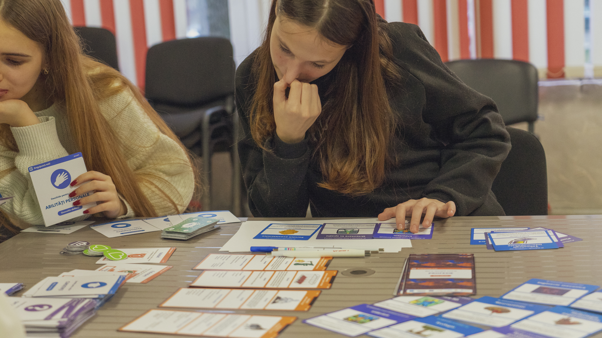

test prototype of Games of Jobs. Formerly called Hire Me.
Problem Statement
Girls between lack confidence in their IT skills and opportunities, especially in rural areas, according to a Magenta Consulting report commissioned by TEKEDU.
Design goal:
Design a board game for young people to gain insight into potential career choices and a better understanding of the future of jobs.
Ensure contribution of young women and men in discussion and decision-making throughout the lifecycle of the project phases.
Design steps:
Prototype and validation, fundraising
Testing workshop
Analysis workshop
Final Prototype
Role:
Product owner
UX research / workshop designer
Grant writer / fundraiser of project
Administrator of donor funds and reporting
Monitoring, evaluation, and learning
Duration:
September 2022 - March 2023
Tools used:
Google docs
Affinity Diagram / UX research
Customer journey mapping / UX research
Monitoring and Evaluation tool sheet
Adobe Illustrator
Prototype and validation, fundraising
First prototype: Hire Me
In January 2022, I met with Alexandr Isenco, founder of MEGA Generation , to discuss creating a career board game for young people. Our goal was to co-design a game that would be customized for its users, incorporating their needs and preferences into the process.
After brainstorming, we designed Hire Me to explore the game's appearance, gameplay logic, and viability.
In 2015, I collaborated with Alexandr on implementing a social issues educational game called Operation P.E.A.C.E., funded by US Government 🇺🇸. Local trainers and game designers provided support for 30 teachers from six countries to create five board games on the topic of conflict resolution and peacebuilding.
Validation
We printed a copy of Hire Me to visually examine the board game and validate the concept. Our primary objective was to ensure that the prototype was suitable for usability testing. By printing the game, we were able to get a better sense of its appearance and gauge its potential for user testing.
Board game test prototype printed for organising testing workshop
Fundraising
I found a grant opportunity on Civic.md, a Moldovan platform that posts social development jobs, grants, tenders, and other prospects. The opportunity was offered by the Institute for War & Peace Reporting (IWPR), and I applied by submitting a project proposal, budget, logframe for monitoring and evaluation, as well as compliance documents that included our organization's certificate of registration, HR policy, financial policy, and procurement policy.
Several months later, I received an email from IWPR informing me that we had been granted 36,395 British pounds to develop a career board game. I had the opportunity to attend the grant award ceremony and personally received the certificate for the grant.
His Excellency Steve Fisher, Ambassador to British Embassy in Chisinau and Olesea Garbuz, Grant award ceremony organised by British Embassy in Chisinau His Excellency AmbassadorReceiving grant award certificate at British Embassy in Chisinau
Testing workshop
Workshop preparation
To handle high school outreach for the board game project, we recruited four champions. We specifically sought out individuals who could take ownership of this responsibility. To fill these positions, I posted a registration call on Instagram , resulting in 11 applications.
Arranged an induction meeting for the four champions of the board game project. This meeting was intended to provide them with an orientation and introduction to their roles and responsibilities within the project.
We organized two game testing workshops in two different cities, with each game session lasting for at least an hour and having four players in each group.

Test workshop helps us to evaluate the overall design of the board game, focusing on its usefulness, desirability, and educational value.
What was evaluated
Overall design
How appealing is the visuals of the game, how suggestive is its design
Game Component
Flow and logic of game, game mechanics, fun elements of the game
Educational value
What game teaches players, skills it helps to develop, behaviour it nurtures
How we evaluated
Realtime feedback
Evaluation form
Video interview
Result of test workshop
A total of 56 participants between ages of 14 to 19
Test workshop was organised in 2 cities in Moldova.
Realtime feedback during game play
During gameplay, testers were asked to note any pain-points and suggestions.
Evaluation form
After game session ended, players filled in the evaluation form
Video interview with Alina and Valeria
Interviews with some participants after the testing workshop concluded
Analysis Workshop
Participants of the test workshop joined us to review feedback collected at testing workshops: real-time feedback, evaluation forms, and video interviews.
Test workshop in youth centre in Balti
Test workshop in public library in Calarasi
I organised the analysis workshop to enhance our understanding of the game's interaction with its users. This will be achieved by examining the positive reactions, identifying pain points, and gaining insights into the mental models of players through the feedback we have received.
Affinity diagram
We used sticky notes to document feedback sources and post on the wall, three colored sticky notes were used. We used the structured and organized approach of an affinity diagram, which enables us to effectively make sense of complex information and support informed decision-making.
To gain a deeper insight, we started collecting the sticky notes for further analysis and posting them according to overall game design, game components, and education value.
User journey mapping
By utilizing user journey mapping, we were able to identify users' positive reactions, pain points, and mental models. The results obtained from this mapping process assisted us in pinpointing areas of improvement for the second version of the board game.
Result of test workshop and analysis
Board game visual redesign and video explaining gameplay
User has proposed a comprehensive rebranding of the board game, which includes the creation of new icons or vector elements to represent each game card. Additionally, they suggest a new brand name and a redesign of the game pack
Simplify game components, rules, and instructions
User recommends simplifying the criteria that need to be met during gameplay and suggests that not all game cards should have criteria. They also propose adding more professions to the game and making the internship card more competitive for players
Final Prototype
Board game redesigned and renamed from Hire Me to Games of Jobs
Simplified game components, rules and instructions